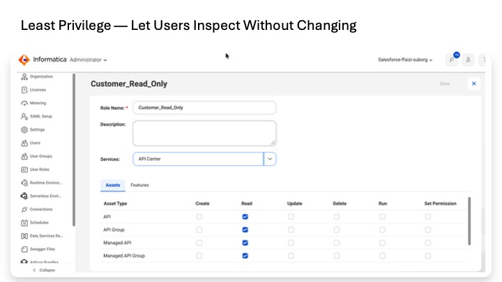
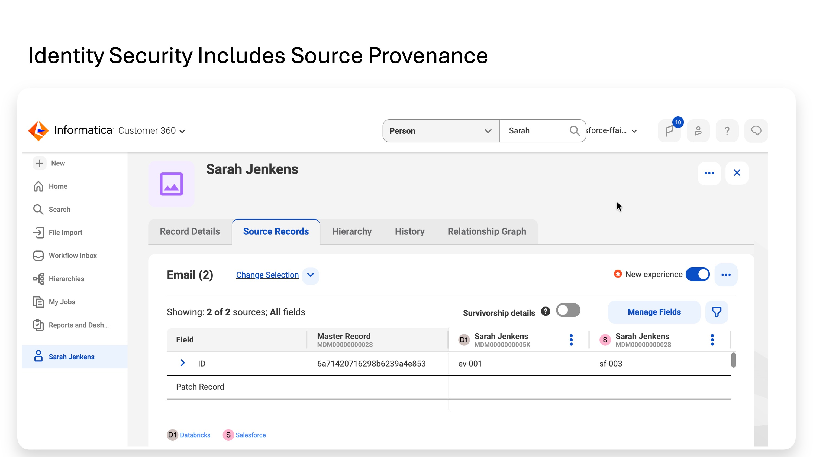
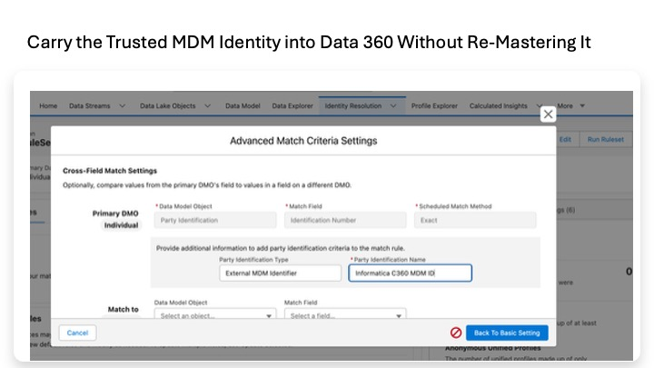
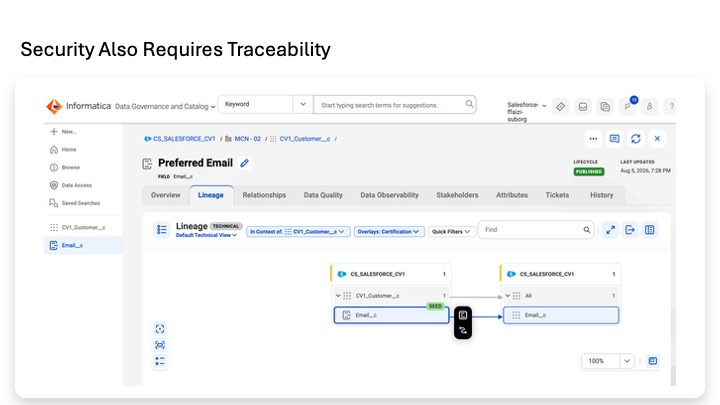

Lab 9
The Salesforce data platform provides a complete end-to-end trust architecture — from source-data quality and governed identity, through controlled integration and lineage, to privacy-aware activation in Salesforce.
The advantage is not one magical security feature. It is that security and governance follow the data from start to finish - as it is checked, cleaned, mastered, moved, protected and finally activated in Data 360. Trust is maintained across the full customer-data lifecycle.
Informatica helps establish whether the data is valid, which records represent the same customer, where the data came from, and how it is governed.
Data 360 then controls how that trusted data is accessed, combined and activated in Salesforce, while zero-copy can reduce unnecessary replication of high-volume data.
The result is not simply a unified customer profile — it is a profile whose quality, identity, provenance, access and permitted use can all be governed.
We have now built the architecture. Let’s review it the way a security architect would review a production design.
Informatica establishes the trusted data foundation: data quality, controlled integration, mastered identity, business meaning and traceability. Salesforce Data 360 puts that trusted data to use: combining mastered identity with customer activity for unified profiles, insights, segmentation and activation.
In this final lab, we review the architecture the way we would review a production design: Who can access the data? How does it cross system boundaries? How do we know it can be trusted? How do we minimize unnecessary exposure? How is privacy respected? And can we prove what happened?
| Lab | Security Perspective |
|---|---|
| 0 — Connect | Secure connectivity and identity start here. Connections should use dedicated, least-privilege identities; credentials should be centrally managed and rotated; runtimes should have only the network reach they require. Informatica’s Secure Agent provides the controlled runtime connecting sources and targets. Production design also includes SSO/MFA, environment separation, network restrictions and credential lifecycle management. |
| 1 — Govern | Define governance before consuming the data. Business terms establish common meaning; policies establish ownership and intent. Policy requirements are enforced through the appropriate operational controls. Where needed, Informatica Data Access Management can add data-protection controls such as filtering, redaction and de-identification. |
| 2 — Profile | Understand sensitive and unreliable data before using it. Profiling reveals nulls, patterns, distributions and unexpected values that affect trust in the data. Because profiling can expose actual data values, access to profiling and its results should itself follow least-privilege principles. |
| 3 — Agree rules | Define controls from agreed standards, not individual assumptions. Business and technical teams agree what valid, acceptable and standardized mean before implementation. In production, rule ownership, review, change control and evidence of approval make those standards governable. |
| 4A — Measure | Make data integrity measurable. Scorecards turn agreed quality requirements into evidence that can be monitored over time. Data quality does not replace IAM, encryption or privacy controls; it strengthens trust in the information those controls protect. |
| 4B — Clean | Control the transformation boundary. Raw source data remains unchanged; clean records and exceptions are separated; mappings explicitly define what is read and where it is written. Source identities should have only the required read access and target identities only the required write access. |
| 5 — Master | Protect identity integrity. Incorrectly merging two different people can expose the wrong customer’s information or drive incorrect downstream decisions. Match rules, human review where appropriate, survivorship, steward access, source provenance and merge history therefore become part of the security design. Customer 360 also supports read-only business-user access for inspection without editing. |
| 6 — Publish | Treat every egress as a trust boundary. Define who initiates movement, which credential is used, what fields leave MDM, who can retry or replay, and where audit evidence is recorded. Apply data minimization: publish only what the consumer needs, and keep API credentials in managed credential stores rather than code. |
| 7 — Activate | Minimize unnecessary copies and enforce privacy where data becomes actionable. Mastered identity is sent directly to Data 360 while high-volume behavioral data can remain in Databricks through Zero Copy. Source security still applies, and Data 360 adds Data Spaces, permission sets, access policies, consent handling and activation controls. |
| 8 — Catalog & lineage | Security needs visibility. Metadata-only scanning is a least-privilege choice; catalog access should itself be controlled because metadata can reveal sensitive locations and structures. Lineage provides evidence of movement and impact, while gaps in lineage should be documented and investigated. |
+-------------------------------------+-------------------------------+ | 1. SOURCE SYSTEMS | 1. SOURCE SYSTEMS | | | | | Salesforce | Databricks | | Customer / CRM data | Engagement + transaction data | +=====================================+===============================+ | ↓ LEAST-PRIVILEGE CONNECTIONS + | | | CONTROLLED CREDENTIALS | | +-------------------------------------+-------------------------------+ | 2. INFORMATICA IDMC --- BUILD THE | | | TRUSTED DATA FOUNDATION | | | | | | Profile the data → Define & measure | | | quality → Clean & standardize → | | | Master customer identity | | | Outcome: trusted Golden Record + | | | persistent MDM Business ID + source | | | traceability | | +-------------------------------------+-------------------------------+ | ↓ PUBLISH ONLY THE MASTERED | | | ATTRIBUTES EACH CONSUMER NEEDS | | +-------------------------------------+-------------------------------+ | 3. SALESFORCE DATA 360 --- PUT | | | TRUSTED DATA TO USE | | | | | | Trusted mastered identity from | | | Informatica + Databricks behavioral | | | / transaction data through Zero | | | Copy | | | Unified customer → Insights → | | | Segments → Activation | | +-------------------------------------+-------------------------------+ | ↓ | | +-------------------------------------+-------------------------------+ | 4. BUSINESS CONSUMERS | | | | | | Salesforce applications • Marketing | | | • Analytics • AI / agents | | +-------------------------------------+-------------------------------+ | SECURITY, PRIVACY & GOVERNANCE | | | ACROSS THE JOURNEY | | | | | | Least privilege • Secure | | | connectivity • Controlled | | | credentials • Data minimization • | | | Consent & access controls • | | | Auditability | | +-------------------------------------+-------------------------------+ | CDGC + MCC PROVIDE | | | CROSS-LANDSCAPE VISIBILITY | | | | | | Catalog • Business meaning • Source | | | traceability • Lineage | | +-------------------------------------+-------------------------------+ | The flow shows where trust is | | | established, how data is activated, | | | and which controls span the | | | architecture. | | +-------------------------------------+-------------------------------+
1. Who can access what?
Identity, SSO/MFA, service accounts, roles, permission sets, Data Spaces, source-system privileges and read-only access. Apply least privilege so people and integrations receive only the access required for their job.
2. How does data cross system boundaries?
Use controlled runtimes and integration identities, secure API authentication, TLS, managed credentials, appropriate network controls and clear ownership of each integration.
3. How do we know the data itself can be trusted?
Profiling → agreed quality rules → scorecards → standardization → exceptions → MDM matching, merge and survivorship. Security includes protecting the integrity of the information being used to make decisions.
4. How do we minimize sensitive-data exposure?
Move only the attributes required by the consumer, avoid unnecessary copies, use Zero Copy where appropriate, restrict source and target access, and apply masking or other protection controls where needed.
5. How is privacy respected when data is used?
Associate consent and privacy preferences with the correct customer identity and carry those requirements through segmentation, activation and downstream use.
6. Can we prove what happened?
Use MDM source history, job and integration logs, catalog metadata, lineage, activation evidence and enterprise security monitoring to establish traceability and auditability.
Security works as a set of complementary controls across the architecture:
Data Quality protects data integrity. Access control separately determines who is permitted to see or change that data.
MDM establishes trusted identity and provenance. Authorization remains the responsibility of the systems exposing and consuming that identity.
Zero Copy reduces unnecessary replication. Source permissions, authentication, network security and Data 360 access controls still protect access to the underlying data.
Governance policies establish business requirements. Those requirements are enforced through the appropriate operational security and data-management controls.
Catalog and lineage provide visibility and traceability. Operational monitoring and security telemetry complement that visibility.
Consent must influence actual use. Capturing a privacy preference matters only when segmentation, activation and downstream processes honor it.

The custom Customer_Read_Only role illustrates the principle directly: for the displayed API Center assets, Read is enabled while Create, Update, Delete, Run and Set Permission are not. The same least-privilege principle must be applied and tested separately across each Informatica service the workshop viewer needs to access.

The golden Person remains traceable to the Salesforce sf-003 and Databricks ev-001 records that contributed to it. That matters for security and privacy because an incorrect identity merge can expose or act on the wrong person’s information; the master should therefore be explainable rather than a black box.

The Data 360 identity rule is scoped to an External MDM Identifier named Informatica C360 MDM ID and uses the Party Identification Number as an exact match. This preserves the identity decision already made in Informatica instead of independently fuzzy-matching the customer again in Data 360.

Governance and security need visibility into where important data exists and what relationships are known. The Preferred Email lineage view provides technical traceability for a governed data element, complementing access control and identity security with evidence about the data itself.
The goal in our data journey is not simply to produce a better customer record.
It is to produce customer data that the enterprise can trust, trace, protect and use responsibly from source through activation.
Trusted Data Foundation Workshop